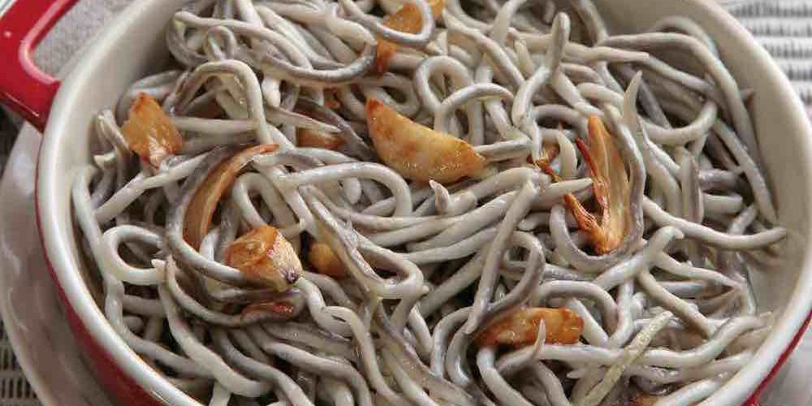

Inicio
Sobre mí
Recetas
Contacto
Otras Cosas
Gula al Ajillo sin Gluten

⏰
Tiempo total:
15 minutos
Ingredientes
1 paquete de gula sin gluten
3 dientes de ajo
4 cayenas sin gluten
Aceite de oliva
Tomates cherry para decorar
Preparación
1.
En una sartén, cubrir la base con aceite y calentar.
2.
Pelar los ajos, cortarlos en rodajas y añadirlos al aceite caliente.
3.
Cuando los ajos empiecen a tomar color, añadir las cayenas y freír bien los ajos.
4.
Incorporar la gula, mezclar y freír durante 3 minutos. Retirar del fuego.
5.
Emplatar y decorar con tomates cherry. Listo para servir.
Autor: Cocina Rápida
Consejos:
Añadir perejil picado para un toque de frescura adicional.
Recetas